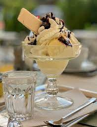
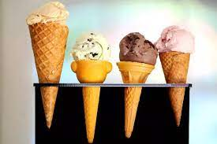
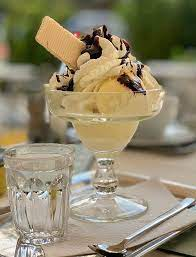
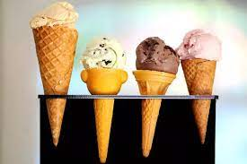

Commercial ice cream is made by combining, under constant agitation, the liquid ingredients (milk, cream, syrups, etc.).
These liquids are heated and combined with dry ingredients (sugar, stabilizers, dried eggs or milk) to form a mix, which is then pasteurized and homogenized.
 


